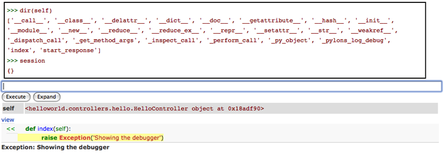

Errors, Troubleshooting, and Debugging¶
When a web application has an error in production, a few different options for handling it are available. Pylons comes with error handlers to allow the following options:
- E-mail the traceback as HTML to the administrators
- Show the Interactive Debugging interface to the developer
- Programmatically handle the error in another controller
- Display a plain error on the web page
Some of these options can be combined by enabling or disabling the appropriate middleware.
Error Middleware¶
In a new Pylons project, the error handling middleware is configured in the projects config/middleware.py:
# Excerpt of applicable section
if asbool(full_stack):
# Handle Python exceptions
app = ErrorHandler(app, global_conf, **config['pylons.errorware'])
# Display error documents for 401, 403, 404 status codes (and
# 500 when debug is disabled)
if asbool(config['debug']):
app = StatusCodeRedirect(app)
else:
app = StatusCodeRedirect(app, [400, 401, 403, 404, 500])
The first middleware configured, ErrorHandler(), actually configures one of two WebError middlewares depending on whether the project is in debug mode or not. If it is in debug mode, then the Interactive Debugging is enabled, otherwise, the e-mail error handling will be used.
The second middleware configured is the StatusCodeRedirect middleware. This middleware watches the request, and if the application returns a response containing one of the status code’s listed, it will call back into the application to the error controller, and use that output instead.
None of these are required for a Pylons project to run, and commenting them all out results in the plain text of the error to display on the web page.
Warning
If no middleware at all is used, the error will appear on the screen in its entirety, including full traceback output.
Recommended Configurations¶
For plain-text output or errors and non-200 status codes, comment out the
StatusCodeRedirect. Tracebacks will be e-mailed to you in production, and the Interactive Debugging will be used during development.For programmatic error and non-200 status code handling, keep the stack as-is.
To not have tracebacks e-mailed, remove only the
ErrorHandler()middleware. This will also disable Interactive Debugging however. To retain Interactive Debugging but disable traceback e-mails:if asbool(config['debug']): app = ErrorHandler(app, global_conf, **config['pylons.errorware'])
Note
To only capture specific non-200 status codes, the StatusCodeRedirect middleware can be passed a list of the codes that it should intercept and redirect to the error controller. When in non-debug mode, it captures the 400-404, and 500 status codes. Altering the list will capture more or less types of requests as desired.
Avoiding Displaying Tracebacks¶
When disabling the ErrorHandler() middleware, a replacement middleware should be created and used that captures exceptions and changes them into a normal WSGI response, otherwise the raw traceback error will be displayed on the browser.
An example middleware that just captures exceptions and changes them to a 500 error:
from webob import Request, Response
class EatExceptions(object):
def __init__(self, app):
self.app = app
def __call__(self, environ, start_response):
req = Request(environ)
try:
response = req.get_response(self.app)
except:
response = Response()
response.status_int = 500
response.body = 'An error has occured'
return response(environ, start_response)
Replacing the ErrorHandler with this middleware will cause tracebacks to not be displayed to the user.
Interactive Debugging¶
Things break, and when they do, quickly pinpointing what went wrong and why makes a huge difference. By default, Pylons uses a customized version of Ian Bicking’s EvalException middleware that also includes full Mako/Myghty Traceback information.
The Debugging Screen¶
The debugging screen has three tabs at the top:
Traceback
Provides the raw exception trace with the interactive debugger
Extra Data
Displays CGI, WSGI variables at the time of the exception, in addition to configuration information
Template
Human friendly traceback for Mako or Myghty templates
Since Mako and Myghty compile their templates to Python modules, it can be difficult to accurately figure out what line of the template resulted in the error. The Template tab provides the full Mako or Myghty traceback which contains accurate line numbers for your templates, and where the error originated from. If your exception was triggered before a template was rendered, no Template information will be available in this section.
Example: Exploring the Traceback¶
Using the interactive debugger can also be useful to gain a deeper insight into objects present only during the web request like the session and request objects.
To trigger an error so that we can explore what’s happening just raise an exception inside an action you’re curious about. In this example, we’ll raise an error in the action that’s used to display the page you’re reading this on. Here’s what the docs controller looks like:
class DocsController(BaseController):
def view(self, url):
if request.path_info.endswith('docs'):
redirect(url('/docs/'))
return render('/docs/' + url)
Since we want to explore the session and request, we’ll need to bind them first. Here’s what our action now looks like with the binding and raising an exception:
def view(self, url):
raise "hi"
if request.path_info.endswith('docs'):
redirect(url('/docs/'))
return render('/docs/' + url)
Here’s what exploring the Traceback from the above example looks like (Excerpt of the relevant portion):
{kind=link}
E-mailing Errors¶
You can make various of changes to how the debugging works. For example if you disable the debug variable in the config file Pylons will email you an error report instead of displaying it as long as you provide your email address at the top of the config file:
error_email_from = you@example.com
This is very useful for a production site. Emails are sent via SMTP so you need to specify a valid SMTP server too.
Programmatically Handling Errors¶
By default, the StatusCodeRedirect will redirect any response with the designated status codes back into the application again. This will result in the error controller in the Pylons project being called. This is why there is a default route in config/routing.py of:
map.connect('/error/{action}', controller='error')
map.connect('/error/{action}/{id}', controller='error')
The error controller allows a project to theme the error message appropriately by changing it to render a template, or redirect as desired.
Original Request Information¶
The original request and response that resulted in the error controller being called is available inside the error controller as:
# Original request
request.environ['pylons.original_request']
# Original response
request.environ['pylons.original_response']
If an HTTPException was thrown in the controller (the abort() function throws these), the original object is available as:
request.environ['pylons.controller.exception']
This allows access to the error message on the exception object.